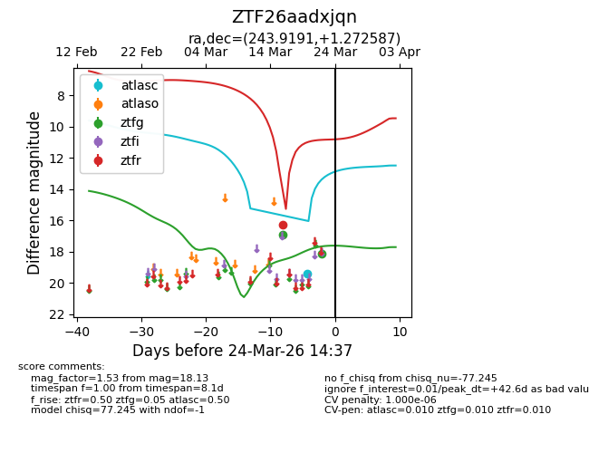
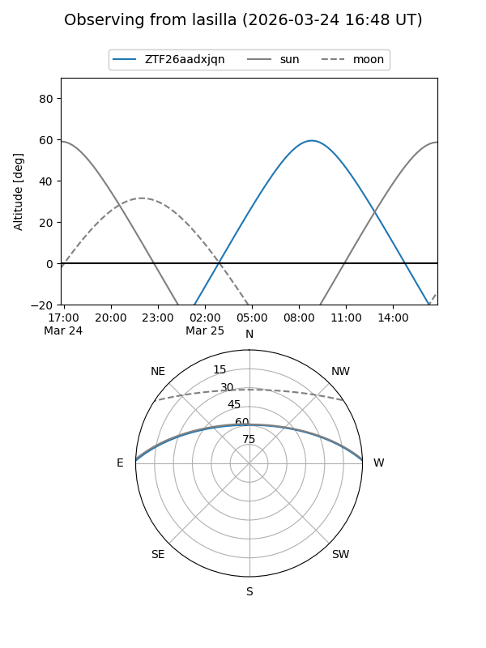
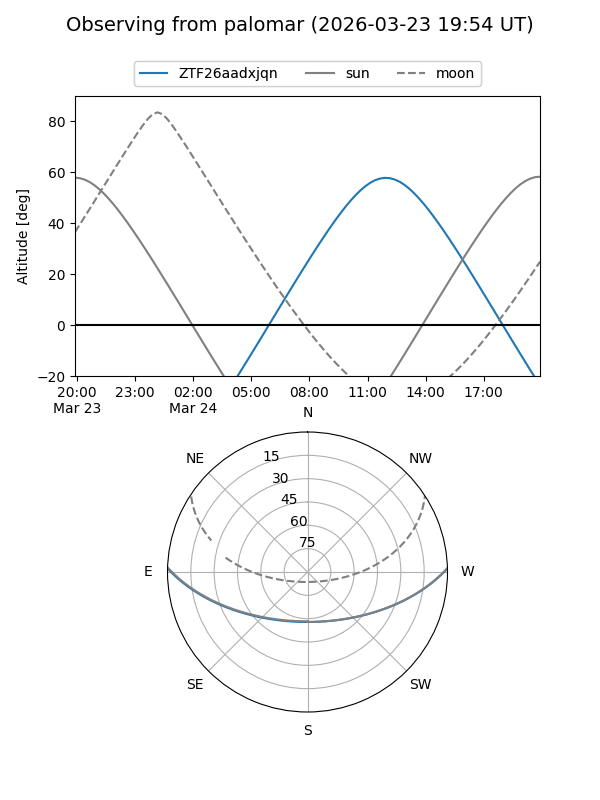
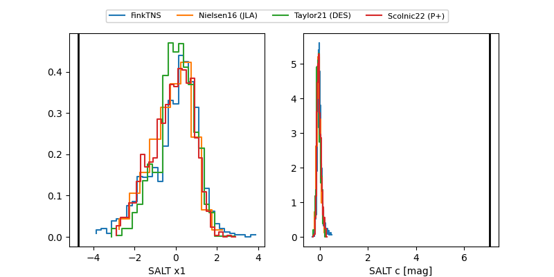

ZTF26aadxjqn
Target ZTF26aadxjqn at 2026-03-24 14:40
Aliases and brokers:
FINK: link
Lasair: link
ALeRCE: link
alt names
ZTF26aadxjqn (ztf,fink_ztf)
Coordinates:
equatorial (ra, dec) = 243.9191,+1.27259
equatorial (HMS+DMS) = 16:15:40.58,+01:16:21.31
galactic (l, b) = (13.9977,+34.70538)
Flags:
likely cv
Photometry:
last atlasc=19.43, ztfg=18.13, ztfr=16.28
1 atlasc, 2 ztfg, 1 ztfr detections
Lightcurve

Visibility


Additional plots
